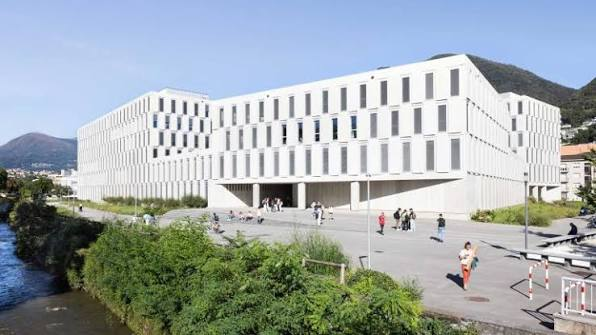
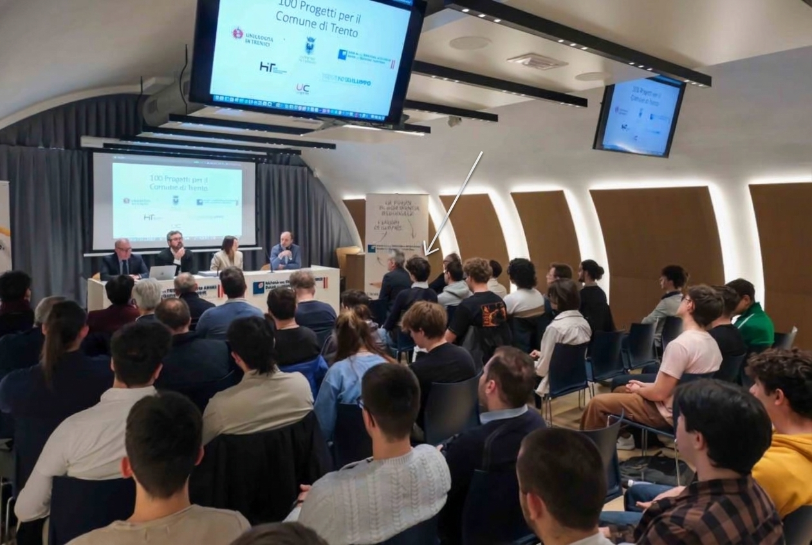
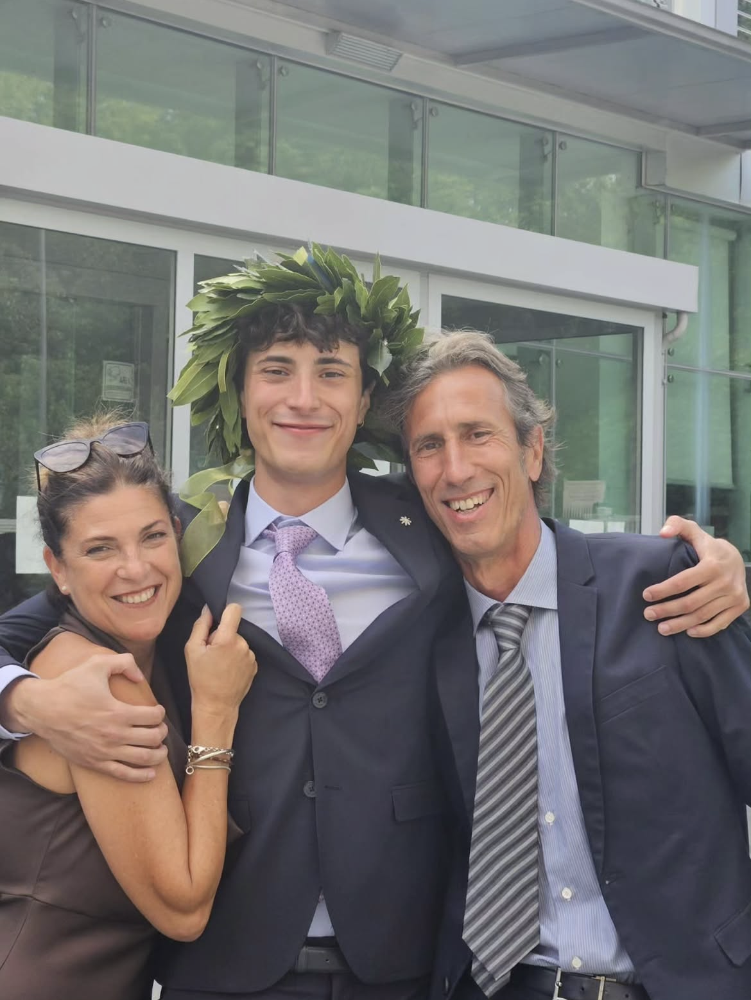
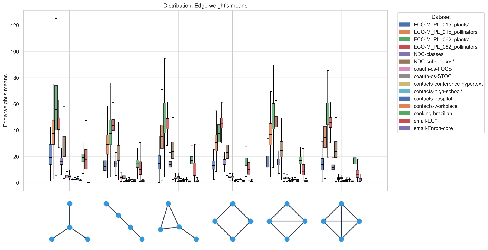

Luoghi
Passioni
Lavoro
Studio

Bachelor ministage USI
Durante l’ultimo anno di superiori ho partecipato ad un ministage presso l’Università della Svizzera Italiana per conoscere l’università, lo stile di vita e il modo di lavorare in quel luogo. È stata la mia prima esperienza di studio all’estero e credo sia stata molto formativa per me, soprattutto da un punto di vista umano.

Visita al Cern di Ginevra
Durante il quinto anno di liceo ho preso parte ad una visita guidata presso il CERN di Ginevra, uno dei centri di ricerca più attrezzati e grandi al mondo. Questa visita ha cambiato completamente le mie prospettive, perché ho avuto la fortuna di vedere macchinari enormi e all’avanguardia che hanno il solo scopo di ampliare anche solo di poco la conoscenza del mondo che ci circonda. Quest’esperienza mi ha colpito in maniera profonda perché mi ha avvicinato molto al mondo della ricerca e ha stimolato molto la mia curiosità in merito.

Cento progetti per Trento
Durante il mio percorso di studi a Trento, ho partecipato all’iniziativa “Cento progetti per Trento” e ritengo che sia stata una delle sfide più formative che ho affrontato durante la triennale. È stato davvero soddisfacente utilizzare le mie competenze per creare una Web App funzionante con uno scopo ed un’idea precisa, ma allo stesso tempo è stato molto complicato. Ciò che questa esperienza mi ha insegnato è stata l’organizzazione di un lavoro complesso tramite gli standard delle aziende, confrontarsi con i compagni per prendere decisioni, ma soprattutto pensare a idee innovative, utili alle persone e che possano migliorare la qualità di vita nel territorio. Per la prima volta ho ragionato seriamente su questi aspetti e credo che sia stato fondamentale per me.

Laurea
La mia laurea triennale in Informatica a Trento è stato il coronamento di un percorso molto intenso, pieno di stimoli e soddisfazioni. Sono molto contento di aver trascorso questi anni all’interno del Collegio e di aver conseguito la laurea con il massimo dei voti e la lode. Credo però che la cosa più importante di questo viaggio sia stata la voglia di conoscere e scoprire con cui l’ho affrontato, infatti spero di poter continuare a mettermi alla prova allo stesso modo in ambienti nuovi e situazioni sconosciute.

Progetto di ricerca
Il tirocinio curricolare che ho fatto durante il corso di laurea triennale si è basato su un lavoro di ricerca nell’ambito della network science. Si tratta quindi di una branca dell’informatica che si occupa di dati organizzati sotto forma di grafi. Questo tipo di dati è ricorrente in moltissime situazioni, dalla biologia alla psicologia; perciò, studiarlo può essere molto utile per analizzare fenomeni reali con strumenti specifici. Nonostante la sua utilità, questa area di ricerca è molto astratta e inesplorata, perciò è stata una vera e propria sfida condurre questa ricerca. Insieme al mio relatore abbiamo deciso di proseguire il lavoro anche dopo la laurea per provare a pubblicare un articolo su una rivista scientifica e sto continuando a lavorare per riuscirci.
Grazie a questa esperienza ho conosciuto il mondo della ricerca in prima persona e questo mi è stato molto utile per capirne le difficoltà e gli aspetti positivi. Sebbene presenti molte sfide, trovo davvero soddisfacente lavorare con l'obiettivo di fare scoperte utili ad una comunità ampia e non solo per guadagnare. In ogni caso voglio continuare il mio progetto per capire se è questa la strada che vorrò percorrere in futuro o meno.
E ora?
In questo momento sto studiando per ottenere la laurea magistrale in Computer Science presso l'università di Trento e sto lavorando per pubblicare un articolo scientifico. Date le esperienze variegate che ho fatto, vorrei mettermi in gioco nuovamente e scoprire cosa significa lavorare per un progetto che riguardi anche altre persone e che possa valorizzare ancora di più una realtà come il Trentino. Vorrei imparare il metodo di lavoro in questo ambiente osservando chi ha anni di esperienza in questo mondo e confrontarmi con chi come me non ne ha affatto, per poter aggiungere anche questo alle mie competenze e poterne usufruire in futuro. Ma soprattutto, sento la necessità di contribuire a restituire qualcosa ad una realtà che mi ha messo a disposizione tutto ciò di cui avevo bisogno per vivere al meglio in un ambiente ricco di cultura e fervore, a cui negli anni mi sono profondamente affezionato.
Cosa metto a disposizione
-
Competenza sul piano digitale Conoscere gli strumenti, i tempi tecnici e il potenziale dei prodotti digitali che possono essere utili nei lavori.
-
Capacità di lavorare in gruppo e in maniera organizzata Tra le mie competenze tecniche rientra quella di saper organizzare e strutturare un progetto, affrontando imprevisti. Inoltre ho esperienza nel lavorare con gruppi di persone con competenze diverse dalle mie per raggiungere un obiettivo comune.
-
Prospettiva esterna ma consapevole L'entusiasmo di chi ha scelto Trento per studiare e vuole restituire valore al territorio, ma che lo riesce a vedere con gli occhi di chi proviene da una realtà molto diversa.